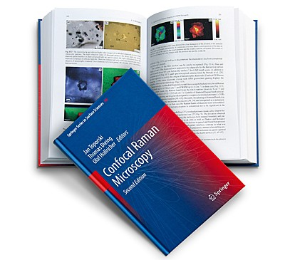

|
介绍
|
拉曼效应描述了电磁波（光）与物质的相互作用，在此过程中一个振动量子被激发（斯托克斯拉曼散射）或湮灭（反斯托克斯拉曼散射）。
当光与分子相互作用时，大多数光子发生弹性散射，因此保留与入射光子相同的能量。这就是瑞利散射，可见于由于阳光被水分子散射而产生的蓝天。
然而，极小部分（约每106 至107 个光子中1个）发生非弹性散射，这意味着散射光子的能量与入射光子的能量不同（通常较低）。这就是拉曼效应，由Chandrasekhara Venkata Raman于1928年发现。他使用过滤后的太阳光束作为激发源，用肉眼检测频率偏移的光，这远在Maiman于1960年开发出第一台激光之前。拉曼因这一发现于1932年获得诺贝尔物理学奖。拉曼效应的理论基础于五年前由A. Smekal（1923年）发表。
拉曼效应的巨大实用性在于，入射光子和拉曼散射光子之间的能量偏移是由分子振动的激发（或湮灭）引起的。每个分子具有若干振动模式，其定义的能量偏移在其特征拉曼光谱中可见。这作为参与散射过程的分子的类型和配位的指纹。
在材料研究中，拉曼光谱提供以下方面的定性和定量信息：
以高空间分辨率记录拉曼光谱能够生成清晰且信息丰富的二维和三维拉曼图像。WITec系统通过同时提供低至亚微米级的空间分辨率和无与伦比的灵敏度，提供了卓越的拉曼成像能力。
知识库
关于拉曼显微镜的（几乎）所有问题的答案都可以在 知识库中找到。
关于该系统的书籍...
更多信息请参阅 共聚焦拉曼显微镜，由WITec科学家Olaf Hollricher、Thomas Dieing和Jan Toporski编辑。该书全面概述了拉曼显微镜的理论背景、实际考虑因素和实际应用，以及仪器技术、新型材料、地球科学、生命与制药科学、材料科学等许多主题的细分章节。可通过 Springer 或在线商店购买印刷版或电子书格式。

图1：共聚焦拉曼显微镜，第2版，编辑：Jan Toporski、Thomas Dieing、Olaf Hollricher，ISBN：978-3-319-75380-5